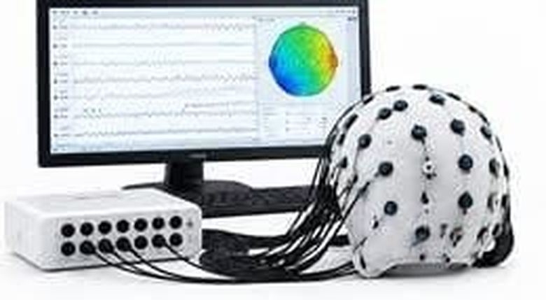
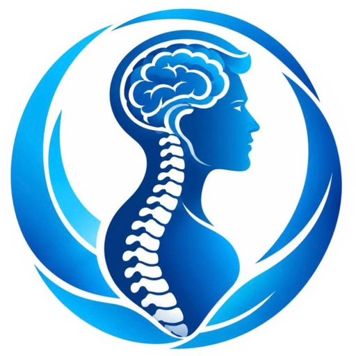
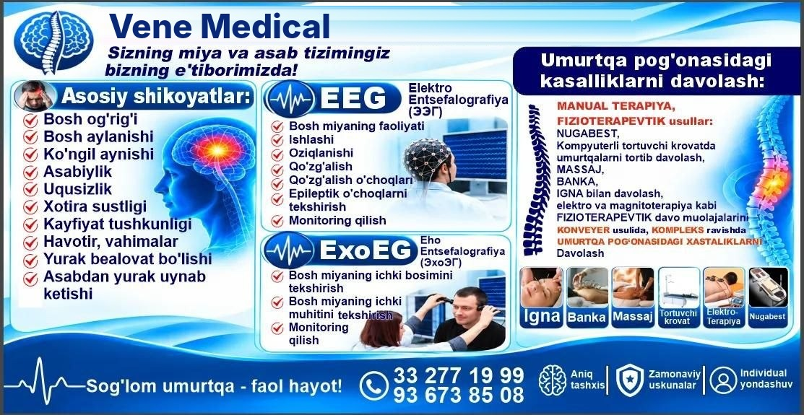
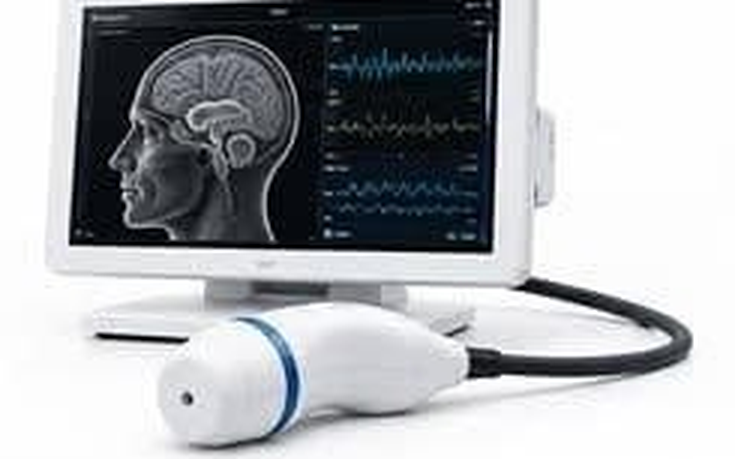

EEG Elektroensefalografiya
Miya faolligi, ishlashi, oziqlanishi, qo'zg'alish va epileptik o'choqlarni tekshirish.
Batafsil
Sizning miya va asab tizimingiz bizning e'tiborimizda! EEG, ExoEG, fizioterapiya, ignaterapiya, manual terapiya va kompyuter traksion — bir joyda.
Sizning miya va asab tizimingiz bizning e'tiborimizda! Sog'lom umurtqa — faol hayot.

Avval aniq tashxis, so'ng kompleks muolaja. Narxlar so'mda.
2 ta apparat

Miya faolligi, ishlashi, oziqlanishi, qo'zg'alish va epileptik o'choqlarni tekshirish.
Batafsil
Bosh miyaning ichki bosimi va ichki muhitini tekshirish hamda monitoring qilish.
Batafsil13 ta fizioterapevtik muolaja · bir martalik narx
Savollar bo'lsa, qo'ng'iroq qiling: 33 277 19 99 · 93 673 85 08
EEG (elektroensefalografiya) — miya faolligi, ishlashi, oziqlanishi, qo'zg'alish va epileptik o'choqlarni tekshirish. ExoEG (exoensefalografiya) — bosh miyaning ichki bosimi va ichki muhitini tekshirish hamda monitoring qilish.
Kompyuter traksion umurtqa pog'onasini aniq o'lchangan kuch bilan asta-sekin cho'zadi. Natijada umurtqalar orasi kengayib, asab ildizlariga bosim kamayadi.
Quyidagi belgilar asab tizimi yoki umurtqa muammosidan darak berishi mumkin. Aniq sababni mutaxassis ko'rigi va tekshiruv ko'rsatadi.
Maslahatga yozilishDavolashdan oldin sababni topamiz — taxmin bilan emas, tekshiruv bilan ishlaymiz.
Traksion, fizioterapiya va ignaterapiya — bir davolash rejasida uyg'unlashadi.
Kompyuter boshqaruvidagi apparatlar aniq va xavfsiz natija beradi.
Har bir bemor uchun alohida davolash dasturi tuziladi.
Shikoyatlaringizni tinglab, holatingizni baholaymiz.
Zarur bo'lsa EEG va boshqa tekshiruvlar o'tkaziladi.
Traksion, fizio- va ignaterapiyadan iborat dastur tuziladi.
Natijani kuzatib boramiz va tavsiyalar beramiz.
Mutaxassislarimiz sizga to'g'ri yo'nalishni tanlashda yordam beradi.
Yo'q. Bosh terisiga datchiklar o'rnatiladi, ular faqat miya signallarini qayd etadi. Tekshiruv butunlay og'riqsiz va xavfsiz.
Bel va bo'yin og'rig'i, osteoxondroz, umurtqalararo churra kabi holatlarda qo'llanadi. Muolaja oldidan shifokor ko'rigi va qarshi ko'rsatmalar tekshiriladi.
Bir martalik steril ignalar ishlatiladi va muolaja malakali mutaxassis tomonidan o'tkaziladi.
Seanslar soni tashxis va holatingizga qarab individual belgilanadi. Aniq reja shifokor ko'rigidan so'ng tuziladi.
Quyidagi shaklni to'ldiring, Telegram yoki Instagram orqali yozing yoki bevosita qo'ng'iroq qiling.
Xaritadan yo'nalishni oling yoki qo'ng'iroq qilib, yo'lni so'rang.
Ma'lumotlaringizni qoldiring — administratorimiz siz bilan bog'lanadi.